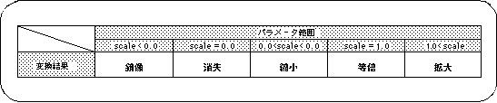
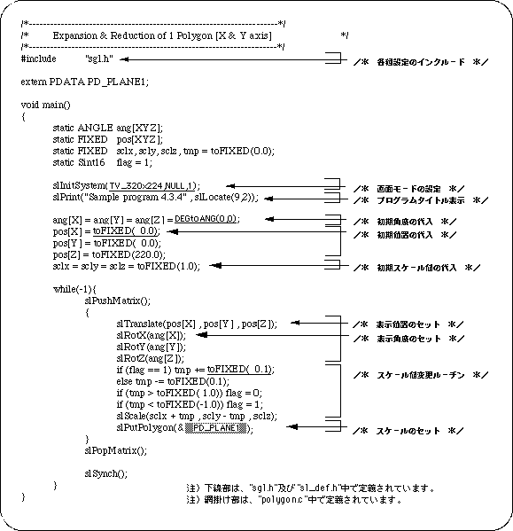
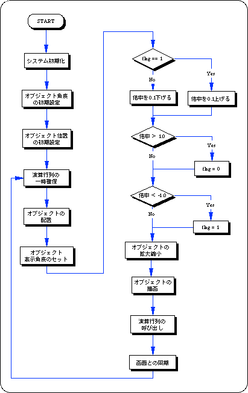

Return to previous page | Return to menu | Go to next page
The library function “slScale” is used to scale objects in the space with SGL. The parameter is passed as a scale ratio along each axis.

Note) “scale” indicates the scale parameter.
If the scale value is 0.0, the object will be drawn as having no thickness in the scaled axis direction.
Also, for negative values less than 0.0, the object is drawn as a mirror image with respect to the scaled axis direction.
Listing 4-5 below shows a program that scales. The scale ratio of the square polygon in the X and Y axis directions is changed.

